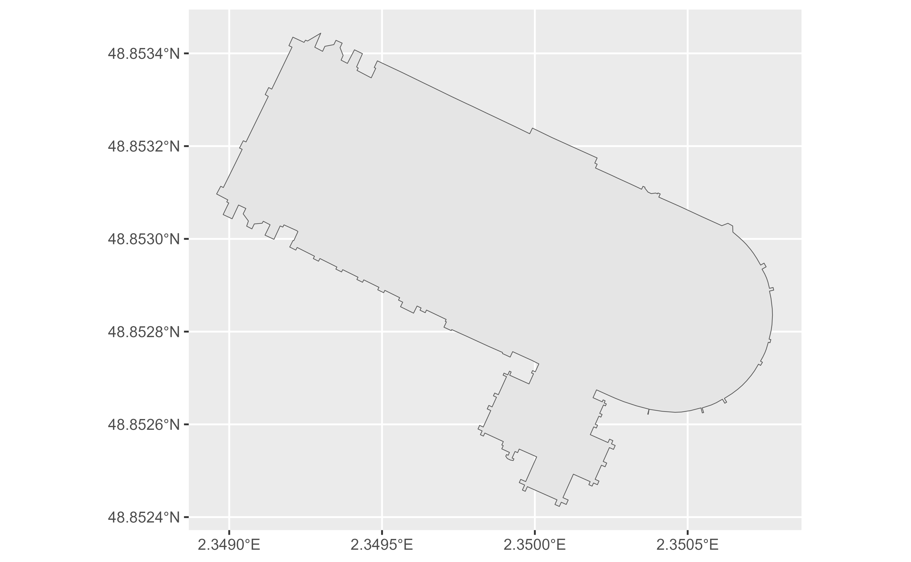

The lookup API allows to query the address and other details of one or
multiple OSM objects like node, way or relation. This function returns the
spatial object associated with the query using sf, see
geo_address_lookup() for retrieving the data in tibble
format.
Arguments
- osm_ids
Vector of OSM identifiers as numeric (
c(00000, 11111, 22222)).- type
Vector character of the type of the OSM type associated to each
osm_ids. Possible values are node ("N"), way ("W") or relation ("R"). If a single value is provided it would be recycled.- full_results
Returns all available data from the API service. If
FALSE(default) only address columns are returned. See alsoreturn_addresses.- return_addresses
Return input addresses with results if
TRUE.- verbose
If
TRUEthen detailed logs are output to the console.- nominatim_server
The URL of the Nominatim server to use. Defaults to
"https://nominatim.openstreetmap.org/".- custom_query
A named list with API-specific parameters to be used (i.e.
list(countrycodes = "US")). See Details.- points_only
Logical
TRUE/FALSE. Whether to return only spatial points (TRUE, which is the default) or potentially other shapes as provided by the Nominatim API (FALSE). See About Geometry Types.
Value
A sf object with the results.
Details
See https://nominatim.org/release-docs/latest/api/Lookup/ for additional
parameters to be passed to custom_query.
About Geometry Types
The parameter points_only specifies whether the function results will be
points (all Nominatim results are guaranteed to have at least point
geometry) or possibly other spatial objects.
Note that the type of geometry returned in case of points_only = FALSE
will depend on the object being geocoded:
Administrative areas, major buildings and the like will be returned as polygons.
Rivers, roads and their like as lines.
Amenities may be points even in case of a
points_only = FALSEcall.
The function is vectorized, allowing for multiple addresses to be geocoded;
in case of points_only = FALSE multiple geometry types may be returned.
See also
Address Lookup API:
geo_address_lookup()
Geocoding:
geo_address_lookup(),
geo_amenity(),
geo_amenity_sf(),
geo_lite(),
geo_lite_sf(),
geo_lite_struct(),
geo_lite_struct_sf()
Get sf objects:
bbox_to_poly(),
geo_amenity_sf(),
geo_lite_sf(),
geo_lite_struct_sf(),
reverse_geo_lite_sf()
Examples
# \donttest{
# Notre Dame Cathedral, Paris
NotreDame <- geo_address_lookup_sf(osm_ids = 201611261, type = "W")
# Need at least one non-empty object
if (any(!sf::st_is_empty(NotreDame))) {
library(ggplot2)
ggplot(NotreDame) +
geom_sf()
}
NotreDame_poly <- geo_address_lookup_sf(201611261,
type = "W",
points_only = FALSE
)
if (any(!sf::st_is_empty(NotreDame_poly))) {
ggplot(NotreDame_poly) +
geom_sf()
}

# It is vectorized
several <- geo_address_lookup_sf(c(146656, 240109189), type = c("R", "N"))
several
#> Simple feature collection with 2 features and 2 fields
#> Geometry type: POINT
#> Dimension: XY
#> Bounding box: xmin: -2.245115 ymin: 52.51739 xmax: 13.39513 ymax: 53.47949
#> Geodetic CRS: WGS 84
#> # A tibble: 2 × 3
#> query address geometry
#> * <chr> <chr> <POINT [°]>
#> 1 R146656 Manchester, Greater Manchester, England,… (-2.245115 53.47949)
#> 2 N240109189 Berlin, Deutschland (13.39513 52.51739)
# }